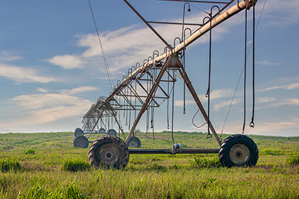
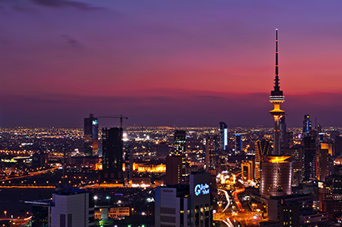
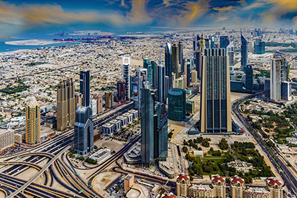
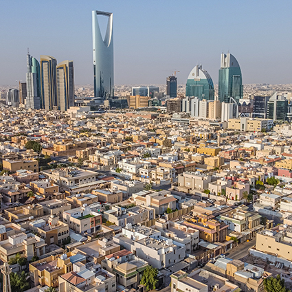

A escassez de água na maioria dos países do Oriente Médio faz com que a agricultura seja desenvolvida por meio de técnicas avançadas de irrigação, como mostra a imagem de uma lavoura em Doha, no Catar, 2020. Crédito: HASANZAIDI/SHUTTERSTOCK.COM

Kuait é considerado um dos países mais secos do mundo, devido à baixa quantidade de água potável disponível em seu território. A maior parte da água consumida no país provém da dessalinização ou é importada. Na imagem, percebe-se a cidade de Kuait, em 2022. Crédito: SHAHBAZ HUSSAIN SHAH/PEXELS

A escassez de água é uma das questões que mais têm determinado as opções tecnológicas dos Emirados Árabes, com investimentos em unidades de dessalinização da água do mar. Na imagem, nota-se a cidade de Dubai, 2016. Crédito: ILLUSION-X/PIXABAY

No território da Arábia Saudita, não há lagos e rios, dessa maneira, a maior parte da água que abastece a população provém de modernas técnicas de dessalinização. Na imagem, nota-se a capital Riad, 2020. Crédito: JAD EL MOURAD/PEXELS